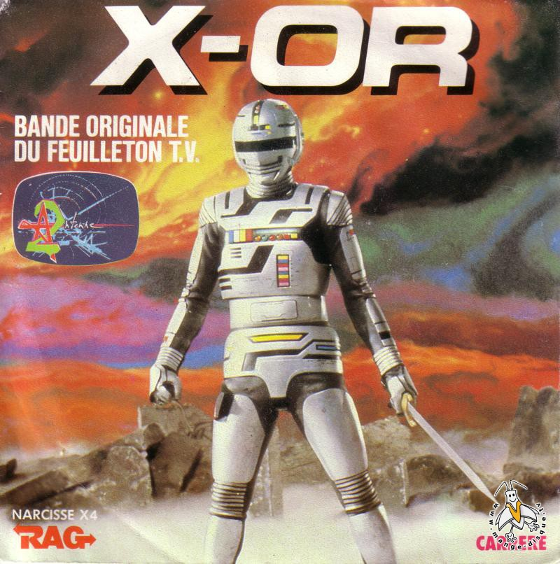

Pour cette fois ci la rubrique karaoke de ce numéro est entièrement consacré aux série Live qui ont marqué notre enfance. Par ailleurs, si vous souhaitez voir les paroles d’une série, n’hésitez pas à écrire et on se fera un plaisir de le faire pour le prochain numéro.

X-OR
Interprété par Jean-Pierre SAVELLI.
Refrain:
X-or !
Le Shérif, Shérif de l’espace.
X-or !
Son domaine, c’est notre galaxie.
Ahhhhh..Ahhhhh..Ahhhhhh..Ahhhhhhh
X-or !
Sur la terre, il est comme toi et moi.
X-or !
Dans le ciel, c’est lui qui fait la loi.
X-or !
Ne crains rien, il nous protégera.
Ouhhhh.Ouhhhhh..Ouhhhh..Ouhhhh
Homme ou robot,
Il change de peau.
Quand de l’espace,
Vient la menace.
Il joue sa vie,
Pour ses amis.
Il se bat !
Refrain
Ses ennemis,
Ont bien compris.
Que lui vivant,
Ils seront perdant.
Et il attaque,
Et ils le traquent
Sans répit.
Sur son Rollersky
Il livre bataille.
A coups de laser,
Il défend la terre.
Seul contre tous,
Il les repousse.
Les Cerex.
Refrain
Pieds et poings nus,
Il se bat kung-fu.
Vrai samourai,
Il ne fait pas d’détail.
Vif comme l’éclair
Et la lumière,
Il bondit.
De son vaisseau,
Il part à l’assaut
Des extraterrestres
Qui nous détestent.
Pour nous sauver,
Il pourrait payer
De sa viiiiiiiieeee !
Refrain
SPECTREMAN
Interprété par Richard DEWITTE.
Spectreman ! (bis)
Plus rapide qu’un missile,
Audacieux, intrépide,
Mystérieux et invincible.
Spectreman !
Sans peur, il traque,
La pollution qui attaque.
Les hommes-singes qui contre-attaquent.
Spectreman !
(Break musical)
Refrain :
Spectreman !
Spectrema..aaaaan !
Spectreman !
Mmmmmmmmhhh..Mmmmmmhhhh..
Spectreman ! (bis)
Des millions d’années lumières,
Pour arriver sur la Terre.
Il restera un mystère.
Spectreman !
Les terriens ne sauront jamais,
De quelle planète il venait.
Il sait garder son secret.
Refrain
Spectreman ! (bis)
Plus rapide qu’un missile,
Audacieux, intrépide,
Mystérieux et invincible.
Spectreman !
Des millions d’années lumières,
Pour arriver sur la terre.
Il restera un mystère.
Spectreman !
Refrain
Bioman
2nd générique. Interprété par Bernard MINET.
Refrain:
Moitié homme, moitié robot.
Le plus valeureux des héros.
Bioman ! (bis)
Défenseur de la Terre.
Comme un arc-en-ciel courageux
Rougeu, Roseu, Vert, Jauneu et Bleu
Bioman ! (bis)
Héros de l'Univers.
Les forces du mal,
Du vide sidéral
Bioman ! (bis)
Tu sauras les briser.
Tu t'en vas vers des aventures,
Qui préparent notre futur.
Bioman ! (bis)
Défenseur de la Terre.
Beaucoup d'hommes rêvent d'avoir
Ton courage, ta force, ton savoir
Bioman ! (bis)
Héros de l'avenir.
Personne ne pourra égaler
Ta vaillance, ta témérité.
Bioman ! (bis)
Reste dans nos souvenirs.
Symbole de paix.
Justice et liberté.
Bioman !(bis)
Défenseur de la Terre.
Refrain
Les forces du mal
Du vide sidéral
Bioman ! (bis)
Tu sauras les briser
Tu t'en vas vers des aventures
Qui préparent notre futur
Bioman ! (bis)
Défenseur de la Terre
Moitié homme, moitié robot
Le plus valeureux des héros
Bioman ! (bis)
Héros de l'Univeeeerrrrrs !
Zora la rousse
Interprété par Kity PALM.
Zora..ra..ra !
Refrain :
Zora La Rousse.
Zora, belle et farouche.
Ta vie a un goût d'aventure.
Zora rebelle.
Zora l'histoire t'appelle.
Toi la sauvageonne au cœur pur.
Au cœur pur...
Pieds nus dans ta course.
Tu vas toujours vers la source.
De la liberté.
Tu poursuis ton rêve.
Pour qu'un jour nouveau se lève.
Sur le monde entier.
AhAhhhh..
Zora La Rousse.
Ton lit est fait de mousse.
Et tu dors à la belle étoile.
Zora fidèle.
Zora tu as des ailes.
Accrochée à ton idéal..Idéal
Toi tu vois la vie avec des yeux étonnés.
Toi tu mords la vie comme le fruit qu'on a volé.
Tant de loups et tant de lait.
Tu vas le partageeeeerrrrr...
Tu sais bien demain le soleil sera plus beau.
Tu sais bien demain le réveil sera plus chaud.
Pour tous ceux qui ont ouvert la cage d'un oisoooooo...
Zora..ra..ra !
Refrain.